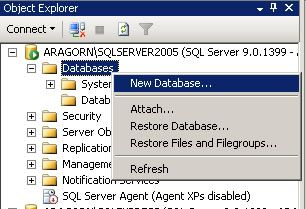
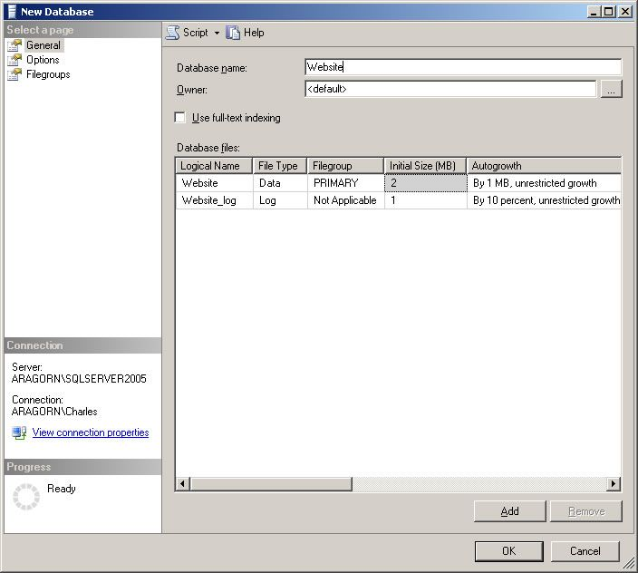
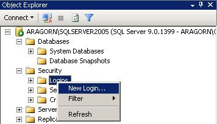
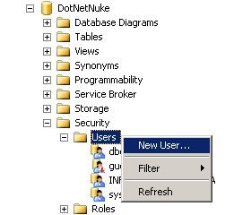

This section includes more detailed information on how to create and configure a SQL Server 2005 database for use with DotNetNuke.
1. In SQL Server Management Studio, in the Object Explorer, Select Databases for the SQL Server instance you wish to use, right-click and select the New Database option.

2. In the New Database dialog give the Database a name (in the example below the Databse is called Website), and click OK.

3. If you decide to use SQL Server Authorization then you will need to use a SQL Server Login. If you do not already have one created then you can create one by selecting Logins under Security, right click and select New Login.

4. Once you have created a Login you need to add that "Login" as a User for your new Database. To do this select the Database you just created, select the Users section, right click on Users and select the New Database User option. In the example shown below we are using the Database - DotNetNuke.

5. Enter the Login name in the text box, or choose the login name by clicking the elipsis button (...), make sure that the db_owner role, and Schema are selected, and click OK
Your database is now ready to be installed.
Back to Welcome page.